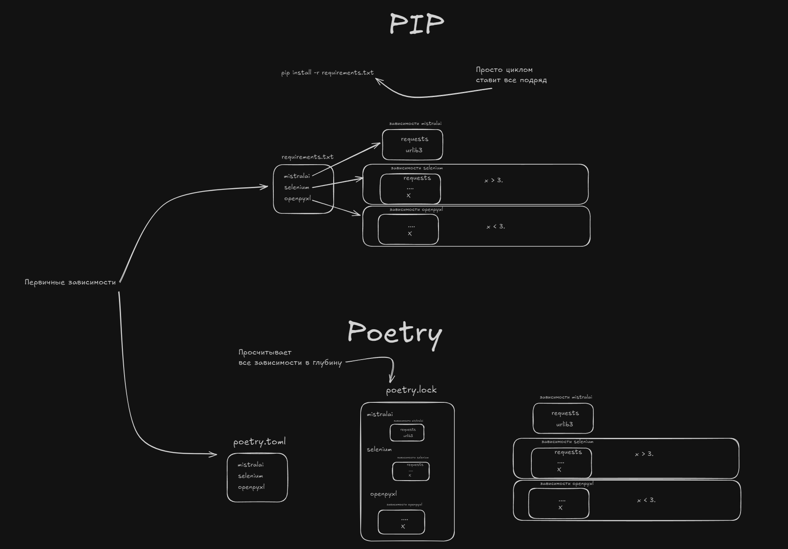
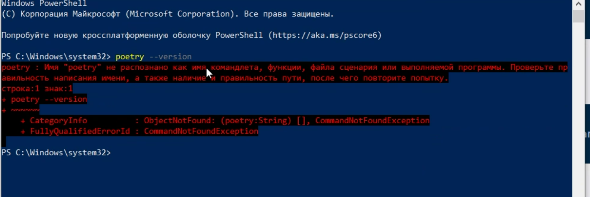
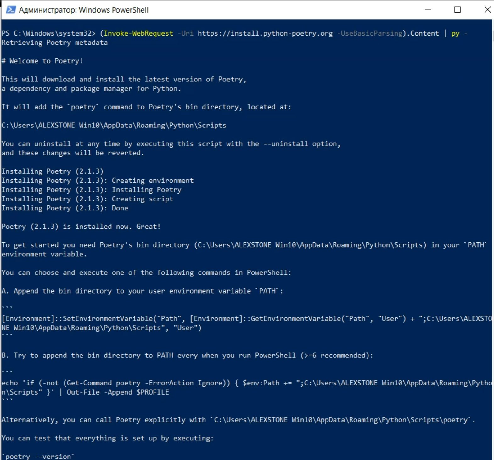

На схеме выше показано, как Poetry упрощает управление зависимостями и виртуальными окружениями, предлагая более структурированный подход по сравнению с традиционным pip.
В этом конспекте мы подробно рассмотрим работу с Poetry — инструментом для управления зависимостями и виртуальными окружениями в Python-проектах. Мы изучим процесс установки, настройки и использования Poetry для эффективной разработки, а также затронем его интеграцию с проектами на Django.
Для начала работы с Poetry необходимо его установить. Официальная документация предлагает удобный способ установки с помощью специального инсталлятора.
[!info]
Установка с помощью официального инсталлятора
Для установки
Poetryв вашей системеWindowsиспользуйте команду вPowerShell, которая загружает и запускает скрипт установки.
(Invoke-WebRequest -Uri https://install.python-poetry.org -UseBasicParsing).Content | py -
После выполнения этой команды Poetry будет установлен, однако для его корректной работы из любого места в терминале необходимо добавить путь к исполняемому файлу в системную переменную PATH. В противном случае вы можете столкнуться с ошибкой, как показано на изображении poetry_path_error.png, где система не может найти команду poetry.

[!warning]
Добавление Poetry в системный PATH ⚠️
После установки
Poetryнеобходимо добавить путь к его исполняемым файлам в переменную окруженияPATH. Это позволит запускать командуpoetryиз любого каталога в терминале.
setx PATH "%PATH%;%APPDATA%\Python\Scripts"
После внесения изменений в системную переменную PATH обязательно перезапустите терминал, чтобы изменения вступили в силу. Это критически важный шаг, без которого Poetry не будет доступен.
Для получения справки по командам Poetry вы можете использовать флаг -h или --help. Например, чтобы узнать больше о команде install:
poetry install -h
После успешной установки и настройки PATH необходимо убедиться, что Poetry доступен в терминале. Для этого просто введите poetry и нажмите Enter. Если установка прошла успешно, вы увидите информацию о Poetry и список доступных команд, как на изображении poetry_success_install.png, подтверждающем успешную установку.

По умолчанию Poetry может создавать виртуальные окружения в централизованном месте. Однако для удобства и лучшей организации проекта рекомендуется, чтобы виртуальные окружения создавались непосредственно внутри папки проекта. Это делает проект более переносимым и самодостаточным.
[!info]
Настройка виртуальных окружений в проекте
Чтобы
Poetryсоздавал виртуальные окружения в папке вашего проекта (обычно в скрытой директории.venv), выполните следующую команду:
powershell poetry config virtualenvs.in-project trueЭту настройку достаточно выполнить один раз на вашей машине. Она будет применяться ко всем новым проектам, которые вы будете инициализировать с помощью
Poetry.
После настройки места хранения окружений можно инициализировать новый проект Poetry. Это создаст файл pyproject.toml, который является центральным конфигурационным файлом для Poetry, определяющим метаданные проекта и его зависимости.
[!info]
Инициализация проекта без интерактивного режима
Для быстрой инициализации проекта без необходимости отвечать на вопросы в интерактивном режиме используйте команду:
powershell poetry init --no-interactionЭта команда создаст базовый файл
pyproject.tomlв корне вашего проекта.
Важно отметить, что команда poetry shell устарела с версии 1.0 и была удалена в более поздних версиях Poetry (мы работаем с версией 2.+). Вместо неё для выполнения команд в контексте виртуального окружения используется poetry run.
Пример содержимого файла pyproject.toml, который будет создан:
[project]
name = "django-consult-413"
version = "0.1.0"
description = ""
authors = [
{name = "VladimirMonin",email = "vladimir.monin2016@yandex.ru"}
]
readme = "README.md"
requires-python = ">=3.13"
dependencies = [
]
[build-system]
requires = ["poetry-core>=2.0.0,<3.0.0"]
build-backend = "poetry.core.masonry.api"
Обратите внимание на секцию [project] и параметр requires-python. Он указывает минимальную версию Python, необходимую для проекта. В нашем случае, мы изменим его на 3.10 для совместимости:
requires-python = ">=3.10"
После того как у нас есть базовый файл pyproject.toml, мы можем добавить Django в наш проект. Poetry упрощает этот процесс, автоматически управляя загрузкой, добавлением в конфигурацию и созданием окружения.
[!highlight]
Добавление Django в проект
Для установки
Djangoи добавления его в зависимости проекта используйте команду:
powershell poetry add djangoЭта команда выполняет несколько ключевых действий: - Скачивает Django: Загружает пакет
DjangoизPyPI(Python Package Index). - Обновляет pyproject.toml: ДобавляетDjangoв секциюdependenciesфайлаpyproject.toml. - Создает poetry.lock: Генерирует файлpoetry.lock, который фиксирует точные версии всех зависимостей, обеспечивая воспроизводимость окружения. - Создает виртуальное окружение: Если оно еще не создано,Poetryинициализирует виртуальное окружение для проекта. - Устанавливает Django: УстанавливаетDjangoи все его транзитивные зависимости в созданное виртуальное окружение.
Если вы скачали готовый проект, который уже содержит файлы pyproject.toml и poetry.lock, установка всех необходимых зависимостей становится очень простой.
[!info]
Установка зависимостей из готового проекта
Для установки всех зависимостей, указанных в файле
poetry.lock, используйте команду:
powershell poetry installОднако, если ваш проект не является "пакетом" в традиционном смысле (т.е. у него нет подпапки с названием проекта, как, например,
django_consult_413в нашем случае),Poetryможет выдать ошибку, требуя "корневой" пакет. Чтобы отключить эту проверку, используйте флаг--no-root:
powershell poetry install --no-rootЭто особенно полезно для веб-проектов или приложений, которые не предназначены для публикации как библиотеки.
В Windows могут возникать проблемы с активацией виртуальных окружений через команду poetry env activate. Однако Poetry предоставляет универсальный способ выполнения команд в контексте проекта, который гарантированно работает на любой операционной системе.
[!info]
Запуск команд с Poetry Run
Используйте
poetry runдля выполнения команд в контексте проекта, например,poetry run python main.py. Это позволяет запускать скрипты и командыDjangoбез прямой активации виртуального окружения.
Для старта проекта Django выполните команду:
poetry run django-admin startproject barbershop .
Это создаст новый проект Django в текущей директории.
Структура нового проекта Django будет выглядеть следующим образом:
.
├── barbershop/
│ ├── __init__.py
│ ├── asgi.py
│ ├── settings.py
│ ├── urls.py
│ └── wsgi.py
└── manage.py
Здесь:
- barbershop/: это основной каталог вашего проекта Django, который содержит конфигурационные файлы.
- manage.py: утилита командной строки, которая позволяет взаимодействовать с проектом Django.
Важно отметить, что Django активно использует концепцию пакетов Python. Поэтому в большинстве случаев необходимо создавать файлы __init__.py в подпапках, чтобы Python распознавал их как пакеты.
Запуск Django сервера
Запуск Django сервера
poetry run python manage.py runserver
Давайте поставим пакет python-dotenv для работы с переменными окружения.
poetry add python-dotenv
Для безопасного хранения конфиденциальных данных, таких как ключи API и секретные ключи, рекомендуется использовать переменные окружения. Для этого мы установили пакет python-dotenv.
Теперь создадим два файла в корне нашего проекта:
.env: Этот файл будет содержать реальные значения ваших переменных окружения. Он предназначен для локальной разработки и никогда не должен попадать в систему контроля версий (Git)..env.example: Это "зеркало" файла .env, но без секретных данных. Он служит примером для других разработчиков, показывая, какие переменные окружения требуются проекту. Этот файл должен быть добавлен в Git.Пример содержимого файла .env:
SECRET_KEY=ваш_реальный_секретный_ключ_django
MISTRAL_API_KEY=ваш_реальный_ключ_mistral_api
Пример содержимого файла .env.example:
SECRET_KEY=django_secret_key_example
MISTRAL_API_KEY=mistral_api_key_example
[!warning]
Важность
.gitignore⚠️Чтобы файл
.envслучайно не попал в репозиторий, его необходимо добавить в файл.gitignore. Убедитесь, что строка.envприсутствует в вашем.gitignore.
.venv/
notes/images/
*__pycache__
.env
db.sqlite3
Впишем в settings.py код для загрузки переменных окружения:
from dotenv import load_dotenv
import os
SECRET_KEY = os.getenv('SECRET_KEY')
MISTRAL_API_KEY = os.getenv('MISTRAL_API_KEY')
Обратите внимание на то, что переменная SECRET_KEY там была. Мы ее переделываем.
А в от MISTRAL_API_KEY мы ее добавляем.